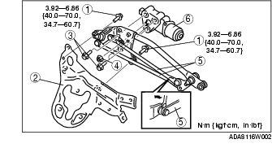

Windshield wiper motor disassembly/assembly 1. Disassemble in the order indicated in the table. 1 Bolt A 2 Windshield wiper motor bracket 3 Bolt B 4 Nut 5 Windshield wiper link 6 Windshield wiper motor 2. Assemble in the reverse order of disassembly.